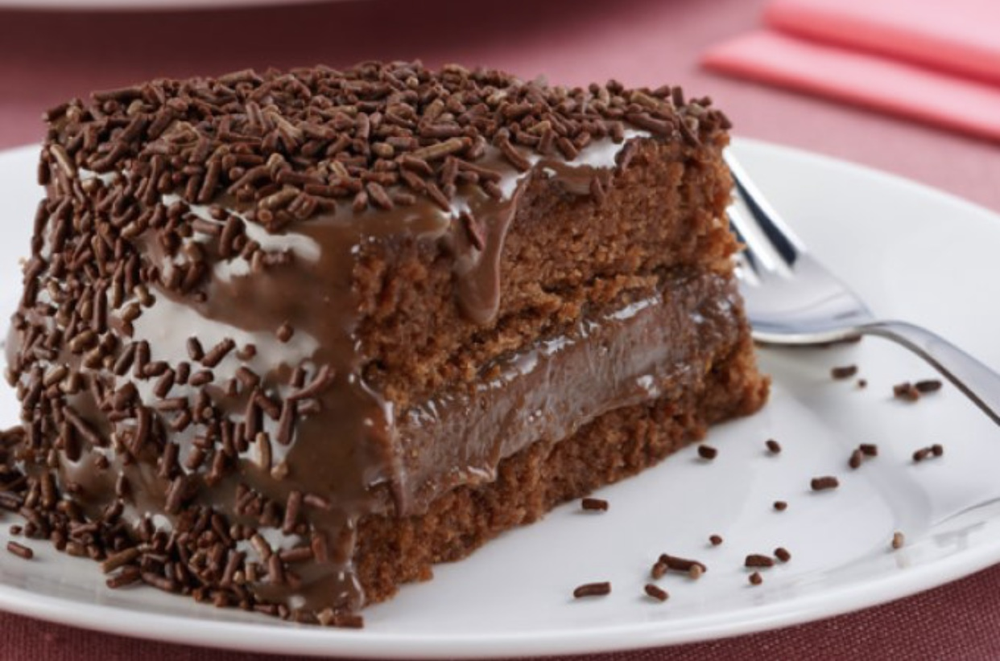

Bolo de brigadeiro

Ingredientes:
- 2 xícaras (chá) de óleo
- 4 unidades de ovo ( claras e gemas separadas)
- 3/4 xícara (chá) de óleo
- 3/4 xícara (chá) de achocolatado
- 3/4 xícara (chá) de Água morna
- 2 xicaras (chá) de farinha de trigo
- 1 colher (sopa) fermento químico
- 2oo licor de chocolate de cacau
- 1ooml Água
- 3 colheres (sopa) de açúcar
- 2 colheres (sopa) margarina
- 200 gramas de granulado de chocolate
Modo de preparo:
- Prepare a massa:bata 2 xícaras (chá) de açúcar com as gemas,depois adicione o óleo, 3/4 de xícara (chá)de achocolatado dissolvido na água morna e, por útltimo, a farinha.
- Bate bem a massa, retire da batedeira e junte as claras batidas em neve.
- Misture delicadamente e acrescente o fermento em pó.
- Leve para assar em forma untada e enfarinhada em forno, pré aquecido a 180C graus.
- Prepare a calda:em uma panela, misture o licor de cacau, a água e 3 colheres( sopa) de açúcar e leve o fogo até ferver.
- Deixe esfriar.
- Desenforme o bolo e divida ao meio.
- Faça furos no bolo comum com garfo e regue com calda.
- Prepare o recheio e cobertura: em uma panela, misture o leite condesando,5 colheres(sopa) de achocolatado e a margarina e leve ao fogo até engrossar,mexendo sem parar.
- Preste atenção para que fique em consistência mole.
- Recheie e cubra o bolo.
- Polvilhe o chocolate granulado.